Example 000
Prompted from triangle in test/triangle-000.stroke
PromptMOVE_SW MOVE_E MOVE_E MOVE_NW

- Edit distance
- 0
- Similarity
- 100.0%
Model continuation
Expected continuation
Each comparison starts from the first two commands of a held-out evaluation example. The teal segment is the prompt, and the orange segment is either the model's completion or the expected continuation from the same test example.
Prompted from triangle in test/triangle-000.stroke
PromptMOVE_SW MOVE_E MOVE_E MOVE_NW
Model continuation
Expected continuation
Prompted from house in test/house-001.stroke
PromptMOVE_SE MOVE_SW MOVE_W MOVE_W
Model continuationMOVE_N MOVE_N MOVE_E MOVE_E
Expected continuationMOVE_N MOVE_N MOVE_E MOVE_E
Prompted from arrow in test/arrow-002.stroke
PromptMOVE_W MOVE_S MOVE_S MOVE_E
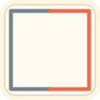
Model continuationMOVE_E MOVE_N MOVE_N MOVE_W
Expected continuationMOVE_E MOVE_NE MOVE_NW MOVE_W
Prompted from parallelogram in test/parallelogram-003.stroke
PromptMOVE_SE MOVE_S MOVE_NW MOVE_N

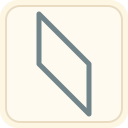
Model continuation
Expected continuation
Prompted from octagon in test/octagon-004.stroke
PromptMOVE_N MOVE_NE MOVE_E MOVE_SE
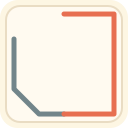
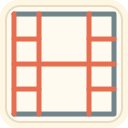
Model continuationMOVE_S MOVE_SW MOVE_W MOVE_NW
Expected continuationMOVE_S MOVE_SW MOVE_W MOVE_NW
Prompted from circle in test/circle-005.stroke
PromptMOVE_S MOVE_SE MOVE_E MOVE_E
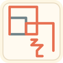
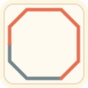
Model continuationMOVE_NE MOVE_N MOVE_N MOVE_NW MOVE_W MOVE_W MOVE_SW MOVE_S
Expected continuationMOVE_NE MOVE_N MOVE_N MOVE_NW MOVE_W MOVE_W MOVE_SW MOVE_S
Prompted from parallelogram in test/parallelogram-006.stroke
PromptMOVE_NW MOVE_N MOVE_N MOVE_SE
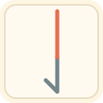
Model continuationMOVE_S MOVE_S
Expected continuationMOVE_S MOVE_S
Prompted from house in test/house-007.stroke
PromptMOVE_E MOVE_E MOVE_NE MOVE_NW
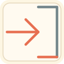
Model continuationMOVE_W MOVE_W MOVE_S MOVE_S
Expected continuationMOVE_W MOVE_W MOVE_S MOVE_S
Prompted from star in test/star-008.stroke
PromptMOVE_E MOVE_SE MOVE_SE MOVE_N
Model continuationMOVE_NE MOVE_NE MOVE_W MOVE_W MOVE_NW MOVE_NW MOVE_S MOVE_S MOVE_SW MOVE_SW MOVE_NE MOVE_NE
Expected continuationMOVE_N MOVE_NE MOVE_NE MOVE_W MOVE_W MOVE_NW MOVE_NW MOVE_S MOVE_S MOVE_SW MOVE_SW MOVE_E
Prompted from square in test/square-009.stroke
PromptMOVE_N MOVE_W MOVE_S MOVE_E

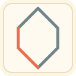
Model continuation
Expected continuation
Prompted from triangle in test/triangle-010.stroke
PromptMOVE_NE MOVE_NW MOVE_S MOVE_S
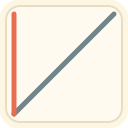
Model continuation
Expected continuation
Prompted from trapezoid in test/trapezoid-011.stroke
PromptMOVE_S MOVE_W MOVE_N MOVE_NE
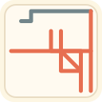
Model continuationMOVE_S
Expected continuationMOVE_S
Representative examples from the current training split, rendered with the same SVG exporter as the prompted completions.
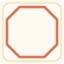
train/octagon-000.stroke
MOVE_NE MOVE_E MOVE_SE MOVE_S MOVE_SW MOVE_W MOVE_NW MOVE_N
train/rectangle-001.stroke
MOVE_S MOVE_E MOVE_N MOVE_N MOVE_W MOVE_S
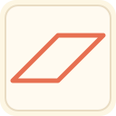
train/parallelogram-002.stroke
MOVE_SW MOVE_E MOVE_NE MOVE_W
train/triangle-003.stroke
MOVE_NE MOVE_S MOVE_S MOVE_NW

train/triangle-004.stroke
MOVE_S MOVE_NW MOVE_NE MOVE_S
train/triangle-005.stroke
MOVE_SW MOVE_E MOVE_E MOVE_NW
train/hexagon-006.stroke
MOVE_S MOVE_SE MOVE_NE MOVE_N MOVE_NW MOVE_SW

train/house-007.stroke
MOVE_SE MOVE_NE MOVE_N MOVE_W MOVE_W MOVE_S
train/pentagon-008.stroke
MOVE_E MOVE_SE MOVE_N MOVE_N MOVE_W MOVE_SW

train/octagon-009.stroke
MOVE_N MOVE_N MOVE_NE MOVE_E MOVE_E MOVE_SE MOVE_S MOVE_S MOVE_SW MOVE_W MOVE_W MOVE_NW
train/diamond-010.stroke
MOVE_W MOVE_W MOVE_N MOVE_N MOVE_E MOVE_E MOVE_S MOVE_S
train/trapezoid-011.stroke
MOVE_W MOVE_W MOVE_SE MOVE_E MOVE_N
train/cross-012.stroke
MOVE_S MOVE_E MOVE_E MOVE_S MOVE_S MOVE_E MOVE_N MOVE_N MOVE_E MOVE_E MOVE_N MOVE_W MOVE_W MOVE_N MOVE_N MOVE_W MOVE_S MOVE_S MOVE_W MOVE_W

train/arrow-013.stroke
MOVE_W MOVE_S MOVE_S MOVE_E MOVE_NE MOVE_NW
train/arrow-014.stroke
MOVE_NW MOVE_NE MOVE_E MOVE_E MOVE_S MOVE_S MOVE_W MOVE_W
train/rectangle-015.stroke
MOVE_NE MOVE_SE MOVE_SW MOVE_SW MOVE_NW MOVE_NE
train/circle-016.stroke
MOVE_W MOVE_SW MOVE_S MOVE_SE MOVE_E MOVE_NE MOVE_N MOVE_NW
train/square-017.stroke
MOVE_E MOVE_S MOVE_W MOVE_N
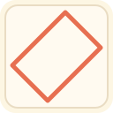
train/rectangle-018.stroke
MOVE_E MOVE_E MOVE_N MOVE_W MOVE_W MOVE_S
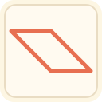
train/parallelogram-019.stroke
MOVE_SE MOVE_SE MOVE_E MOVE_NW MOVE_NW MOVE_W
train/triangle-020.stroke
MOVE_W MOVE_SE MOVE_NE MOVE_W

train/octagon-021.stroke
MOVE_S MOVE_SE MOVE_SE MOVE_E MOVE_E MOVE_NE MOVE_NE MOVE_N MOVE_N MOVE_NW MOVE_NW MOVE_W MOVE_W MOVE_SW MOVE_SW MOVE_S
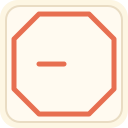
train/trapezoid-022.stroke
MOVE_W MOVE_S MOVE_E MOVE_E MOVE_NW

train/parallelogram-023.stroke
MOVE_N MOVE_N MOVE_NW MOVE_NW MOVE_S MOVE_S MOVE_SE MOVE_SE